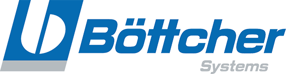

Who We Are
Eldor Printing Supplies was founded in 1983 by Peter and Dorit Nelke and is engaged in marketing and importing equipment for the printing industry.
The company has put on its banner the principles of reliability and customer service. Peter and Dorit strive to uphold and implement these principles hour by hour, day by day, and night by night... Eldor markets equipment from the world's leading manufacturers in their field and provides reliable, fast, and professional service.
Representations
Eldor Printing Supplies is the Israeli representative for some of the global leaders in printing equipment and machinery, including:
-
 Radobla manufactures doctor blades. The company offers solutions for various uses in flexo printing machines and varnish application in offset printing towers, tailored to customer needs.
Radobla manufactures doctor blades. The company offers solutions for various uses in flexo printing machines and varnish application in offset printing towers, tailored to customer needs. -
 Koenig & Bauer MetalPrint is the world's largest manufacturer of advanced machines for printing on metal. The company specializes in developing innovative solutions for industrial and artistic metal printing, ensuring high quality and long-term reliability.
Koenig & Bauer MetalPrint is the world's largest manufacturer of advanced machines for printing on metal. The company specializes in developing innovative solutions for industrial and artistic metal printing, ensuring high quality and long-term reliability. -
 Perfecta is the world's oldest manufacturer of guillotines, with decades of experience in producing precise cutting machines. The company's products are designed for the printing and packaging industries and include manual and automatic models that incorporate advanced technologies.
Perfecta is the world's oldest manufacturer of guillotines, with decades of experience in producing precise cutting machines. The company's products are designed for the printing and packaging industries and include manual and automatic models that incorporate advanced technologies. -
 Kama manufactures die-cutting machines with options for hot stamping and foil application, as well as automatic folding and gluing machines. The company's machines are suitable for a wide range of applications in the printing industry, offering high-quality solutions for advanced print finishing.
Kama manufactures die-cutting machines with options for hot stamping and foil application, as well as automatic folding and gluing machines. The company's machines are suitable for a wide range of applications in the printing industry, offering high-quality solutions for advanced print finishing. -
 Toppy specializes in advanced solutions for sheet and roll turning. The company offers mobile and stationary sheet turners with vibration and blower options to improve the turning process, as well as roll turners designed for diverse industrial use.
Toppy specializes in advanced solutions for sheet and roll turning. The company offers mobile and stationary sheet turners with vibration and blower options to improve the turning process, as well as roll turners designed for diverse industrial use. -
 Baldwin develops and supplies cooling and water mixing systems for printing machines, alongside advanced washing systems. The company's products improve efficiency and cleanliness in printing processes, contributing to extended machine life and maintaining work quality.
Baldwin develops and supplies cooling and water mixing systems for printing machines, alongside advanced washing systems. The company's products improve efficiency and cleanliness in printing processes, contributing to extended machine life and maintaining work quality. -
Contitech is Germany's largest and leading manufacturer of blankets. The company specializes in producing high-quality blankets for all types of printing and provides solutions tailored to the specific needs of offset, flexo, and digital printing machines.
-

Böttcher is the original roller manufacturer for leading printing machines such as KBA, Heidelberg, and Komori. The company, the largest and oldest in its field worldwide, specializes in advanced roller solutions manufactured to high standards and suitable for all types of printing industries.
-
 Apex specializes in manufacturing new and refurbished anilox rollers and sleeves for all types of printing machines worldwide, including offset, flexo, and varnish coating. Apex is a leader in its field and has developed the innovative GTT technology for precise and efficient ink and varnish application.
Apex specializes in manufacturing new and refurbished anilox rollers and sleeves for all types of printing machines worldwide, including offset, flexo, and varnish coating. Apex is a leader in its field and has developed the innovative GTT technology for precise and efficient ink and varnish application. -
 Opticolor is an advanced manufacturer of measurement and control units, as well as fluid management systems. The company develops customized solutions for special tasks such as cleaning, maintenance, and dosing of liquid components, providing smart systems for the printing and chemical industries.
Opticolor is an advanced manufacturer of measurement and control units, as well as fluid management systems. The company develops customized solutions for special tasks such as cleaning, maintenance, and dosing of liquid components, providing smart systems for the printing and chemical industries. -
 Folex specializes in developing and manufacturing a variety of specialized media products for the printing and digital display industries. The company offers high-quality films, sheets, and transparent media for professional applications, including advanced solutions for digital printing, offset printing, and signage.
Folex specializes in developing and manufacturing a variety of specialized media products for the printing and digital display industries. The company offers high-quality films, sheets, and transparent media for professional applications, including advanced solutions for digital printing, offset printing, and signage. - And others...
Products
Our product range includes high-quality standard blankets as well as specialized varnish printing blankets tailored to the unique needs of advanced printing processes. Additionally, the company offers high-performance rubber rollers suitable for various printing machines, as well as advanced water additives to improve ink transfer and adhesion. In the field of maintenance and cleaning, we provide dedicated washing materials that help extend component life and ensure optimal print quality over time. The offering also includes smart mixing and dosing systems for liquids, enabling precise control in preparation and application processes. In the area of climate control for printing processes, we offer advanced cooling and chilling systems, alongside IR and UV drying systems that ensure fast and uniform drying even at high printing speeds. Furthermore, the company supplies efficient powder sprayers for all printing methods, helping to prevent sheet adhesion. Finally, we also provide new or refurbished anilox rollers designed for precise ink and varnish applications, customized to the machine type and operational needs of the customer.